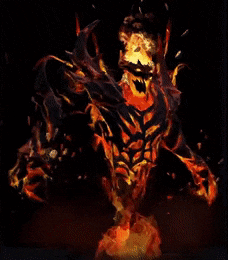
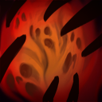
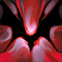

Shadow Fiend

История:Говорят, у Невермора душа поэта, но на самом деле у него их
тысячи. Веками он поглощал души стихотворцев, священников,
императоров, нищих, рабов, философов, преступников и, естественно,
героев. Не скрыться от него ни душе. Никто не знает, что он с ними
делает. Никто не вглядывался в Бездну, где среди астральных скал
Невермор таится, словно змея. Пожирает ли он души одну за другой?
Выставляет ли он их трофеями в коридорах зловещего храма? Маринует ли
в чернокнижном рассоле? А может, он — лишь марионетка, которой
кукловодит зловещий разум извне пространства? Таково его зло,
настолько силен его тёмный дух, что разумом его не понять. А если вам
всё же очень хочется разузнать, что он делает с душами, то всё просто:
присоединяйтесь к его коллекции. Или просто подождите: Невермор уже
идёт к вам.

Герой опустошает участок земли прямо перед собой, нанося урон всем
врагам в зоне действия. Накладывает на жертву складывающийся эффект,
увеличивающий урон от этой способности с каждым её попаданием.

Герой крадёт душу каждого убитого врага, получая бонус к атаке.
После смерти выпускает 40% из них.
Присутствие героя снижает броню ближайших врагов.

Герой выпускает собранные души в волнах демонической энергии.
Существа возле него могут получить урон от нескольких волн.
Замедляет передвижение врагов и накладывает на них страх на сек. за
каждую задетую волну. Создаёт одну волну энергии за каждую 1-ну
душу, захваченные с помощью Necromastery.